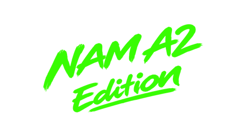

Neural Amp Modeler captures of real amps and pedals, running on the POD Go's own DSP as an amp block, with your drives, delays and reverbs either side.
Unofficial and experimental. Not made or supported by Line 6 or Yamaha Guitar Group. Installing modified firmware is at your own risk and may void your warranty. Back up first, and read Recovery below before you start.
NAM A2 Lite sits in the amp list where Line 6 Elektrik was. Every other amp, cab, effect and IR is unchanged.
Convert a .nam file, import it with POD Go Edit like an IR, and pick it with the Model knob. Up to 101 at once.
Most captures include the cab, so the cab block can go and its DSP goes to effects.
Templates without cab, FX loop or fixed EQ: up to 7 effects around NAM, measured on the unit.
Back up your presets and IRs with POD Go Edit. Keep Line 6's official POD_Go_v2.50.0_0x6e984472.hxf somewhere safe: you build from it, and it is your way back.
Drop your stock file here. This page adds NAM A2 Lite to it, in your browser, and gives you the new file to install. Nothing is uploaded: your firmware never leaves this computer, so no Line 6 code is ever shared.

Shown over the stock POD Go boot screen. The overlay holds only this lettering; your POD Go supplies the rest.The first build downloads the build tools (about 15 MB) and takes 30–90 seconds. Keep this tab open until it finishes. It checks your file's fingerprint first, and at the end compares the result with the build the project tested on a POD Go: it says Verified only when every byte matches.
python3 -m venv .venv && .venv/bin/pip install -r requirements-dev.txt .venv/bin/python podgo/build_podgo.py POD_Go_v2.50.0_0x6e984472.hxf
The same build, plus a run of the NAM code in a SHARC simulator against a reference. It writes build/POD_Go_v2.50.0_NAM_A2_Lite.hxf, the same bytes as this page.
Quit POD Go Edit, open Line 6 Updater, choose Choose File and pick the built file. Don't unplug until it has restarted. Presets and IRs stay.
On the converter page: drop in NAM A2 Lite captures (48 kHz) and download the .wav files. Nothing is uploaded.
Import the .wav into an IR slot with POD Go Edit. In a preset choose NAM A2 Lite as the amp, set Model to the slot (0.0 = slot 1, 0.3 = slot 4) and turn the cab block off.
Import with POD Go Edit. Each one leaves out the blocks NAM doesn't need, so the DSP goes to effects. NAM is on IR slot 4; the expression pedal runs volume, with the wah on the toe switch.
| Template | Chain | DSP units |
|---|---|---|
| NAM Blank | Volume, NAM; 9 empty blocks | 3,000 |
| NAM Essentials | Volume, Wah, Minotaur, NAM, Simple Delay, Plate | 5,411 |
| NAM Full Board | Volume, Deluxe Comp, Minotaur, NAM, Simple EQ, Chorus, Vintage Digital, Hall | 6,725 |
The unit's limits with fixed blocks removed: one each of amp, cab or IR, fixed EQ and FX loop; up to 7 other effects; blocks totalling about 8,000 units. NAM counts as 2,850.
POD Go Edit still shows the block as Line 6 Elektrik with Elektrik's knob names; the POD Go shows NAM's.
| On the POD Go | In POD Go Edit | What it does |
|---|---|---|
| Input | Drive | Level into the capture, ±20 dB; 5.0 = as recorded |
| Bass · Mid · Treble | Bass · Mid · Treble | Tone stack after the capture, ±12 dB each |
| High Cut | Presence | Top-end roll-off; 10 = open |
| Output | Ch Vol | Block volume; 5.0 = unity |
| Model | Master | The IR slot: (slot − 1) ÷ 10 |
| Mid Freq · Q | Sag · Ripple | Where the Mid knob works (150 Hz – 3 kHz) and how wide |
| Polarity | Bias X | Inverts the phase above 5.0 |
If the POD Go stops at the splash screen, or you want the normal firmware back: turn it off, hold Page > while you turn it on (update mode), then install the stock 2.50 file with Line 6 Updater's Choose File. The mod never touches the bootloader, so this always works.